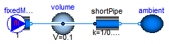
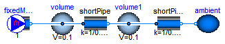

Extends from Modelica.Icons.Package (Icon for standard packages).
| Name | Description |
|---|---|
| Interface for quasi one-dimensional fluid flow in a piping network (incompressible or compressible, one or more phases, one or more substances) | |
| Fluid connector with filled icon | |
| Fluid connector with outlined icon | |
| PortVolume | Fixed volume associated with a port by the finite volume method |
| FixedMassFlowRate | Ideal pump that produces a constant mass flow rate from a large reservoir at fixed temperature and mass fraction |
| Ambient pressure, temperature and mass fraction source | |
| ShortPipe | Simple pressure loss in pipe |
| PartialTestModel | Basic test model to test a medium |
| PartialTestModel2 | slightly larger test model to test a medium |
| Type | Name | Description |
|---|---|---|
| AbsolutePressure | p | Pressure in the connection point [Pa] |
| flow MassFlowRate | m_flow | Mass flow rate from the connection point into the component [kg/s] |
| SpecificEnthalpy | h | Specific mixture enthalpy in the connection point [J/kg] |
| flow EnthalpyFlowRate | H_flow | Enthalpy flow rate into the component (if m_flow > 0, H_flow = m_flow*h) [W] |
| MassFraction | Xi[Medium.nXi] | Independent mixture mass fractions m_i/m in the connection point [kg/kg] |
| flow MassFlowRate | mXi_flow[Medium.nXi] | Mass flow rates of the independent substances from the connection point into the component (if m_flow > 0, mX_flow = m_flow*X) [kg/s] |
| ExtraProperty | C[Medium.nC] | properties c_i/m in the connection point |
| flow ExtraPropertyFlowRate | mC_flow[Medium.nC] | Flow rates of auxiliary properties from the connection point into the component (if m_flow > 0, mC_flow = m_flow*C) [kg/s] |
connector FluidPort
"Interface for quasi one-dimensional fluid flow in a piping network (incompressible or compressible, one or more phases, one or more substances)"
replaceable package Medium = Modelica.Media.Interfaces.PartialMedium
"Medium model";
Medium.AbsolutePressure p "Pressure in the connection point";
flow Medium.MassFlowRate m_flow
"Mass flow rate from the connection point into the component";
Medium.SpecificEnthalpy h "Specific mixture enthalpy in the connection point";
flow Medium.EnthalpyFlowRate H_flow
"Enthalpy flow rate into the component (if m_flow > 0, H_flow = m_flow*h)";
Medium.MassFraction Xi[Medium.nXi]
"Independent mixture mass fractions m_i/m in the connection point";
flow Medium.MassFlowRate mXi_flow[Medium.nXi]
"Mass flow rates of the independent substances from the connection point into the component (if m_flow > 0, mX_flow = m_flow*X)";
Medium.ExtraProperty C[Medium.nC] "properties c_i/m in the connection point";
flow Medium.ExtraPropertyFlowRate mC_flow[Medium.nC]
"Flow rates of auxiliary properties from the connection point into the component (if m_flow > 0, mC_flow = m_flow*C)";
end FluidPort;

Extends from FluidPort (Interface for quasi one-dimensional fluid flow in a piping network (incompressible or compressible, one or more phases, one or more substances)).
| Type | Name | Default | Description |
|---|---|---|---|
| replaceable package Medium | PartialMedium | Medium model | |
| Type | Name | Description |
|---|---|---|
| AbsolutePressure | p | Pressure in the connection point [Pa] |
| flow MassFlowRate | m_flow | Mass flow rate from the connection point into the component [kg/s] |
| SpecificEnthalpy | h | Specific mixture enthalpy in the connection point [J/kg] |
| flow EnthalpyFlowRate | H_flow | Enthalpy flow rate into the component (if m_flow > 0, H_flow = m_flow*h) [W] |
| MassFraction | Xi[Medium.nXi] | Independent mixture mass fractions m_i/m in the connection point [kg/kg] |
| flow MassFlowRate | mXi_flow[Medium.nXi] | Mass flow rates of the independent substances from the connection point into the component (if m_flow > 0, mX_flow = m_flow*X) [kg/s] |
| ExtraProperty | C[Medium.nC] | properties c_i/m in the connection point |
| flow ExtraPropertyFlowRate | mC_flow[Medium.nC] | Flow rates of auxiliary properties from the connection point into the component (if m_flow > 0, mC_flow = m_flow*C) [kg/s] |
connector FluidPort_a "Fluid connector with filled icon" extends FluidPort;end FluidPort_a;
 Modelica.Media.Examples.Tests.Components.FluidPort_b
Modelica.Media.Examples.Tests.Components.FluidPort_b
Extends from FluidPort (Interface for quasi one-dimensional fluid flow in a piping network (incompressible or compressible, one or more phases, one or more substances)).
| Type | Name | Default | Description |
|---|---|---|---|
| replaceable package Medium | PartialMedium | Medium model | |
| Type | Name | Description |
|---|---|---|
| AbsolutePressure | p | Pressure in the connection point [Pa] |
| flow MassFlowRate | m_flow | Mass flow rate from the connection point into the component [kg/s] |
| SpecificEnthalpy | h | Specific mixture enthalpy in the connection point [J/kg] |
| flow EnthalpyFlowRate | H_flow | Enthalpy flow rate into the component (if m_flow > 0, H_flow = m_flow*h) [W] |
| MassFraction | Xi[Medium.nXi] | Independent mixture mass fractions m_i/m in the connection point [kg/kg] |
| flow MassFlowRate | mXi_flow[Medium.nXi] | Mass flow rates of the independent substances from the connection point into the component (if m_flow > 0, mX_flow = m_flow*X) [kg/s] |
| ExtraProperty | C[Medium.nC] | properties c_i/m in the connection point |
| flow ExtraPropertyFlowRate | mC_flow[Medium.nC] | Flow rates of auxiliary properties from the connection point into the component (if m_flow > 0, mC_flow = m_flow*C) [kg/s] |
connector FluidPort_b "Fluid connector with outlined icon" extends FluidPort;end FluidPort_b;
This component models the volume of fixed size that is associated with the fluid port to which it is connected. This means that all medium properties inside the volume, are identical to the port medium properties. In particular, the specific enthalpy inside the volume (= medium.h) is always identical to the specific enthalpy in the port (port.h = medium.h). Usually, this model is used when discretizing a component according to the finite volume method into volumes in internal ports that only store energy and mass and into transport elements that just transport energy, mass and momentum between the internal ports without storing these quantities during the transport.
| Type | Name | Default | Description |
|---|---|---|---|
| Volume | V | 1e-6 | Fixed size of junction volume [m3] |
| Initial pressure or initial density | |||
| Boolean | use_p_start | true | select p_start or d_start |
| AbsolutePressure | p_start | 101325 | Initial pressure [Pa] |
| Density | d_start | 1 | Initial density [kg/m3] |
| Initial temperature or initial specific enthalpy | |||
| Boolean | use_T_start | true | select T_start or h_start |
| Temperature | T_start | Modelica.SIunits.Conversions... | Initial temperature [K] |
| SpecificEnthalpy | h_start | 1.e4 | Initial specific enthalpy [J/kg] |
| Only for multi-substance flow | |||
| MassFraction | X_start[Medium.nX] | Initial mass fractions m_i/m [kg/kg] | |
| Type | Name | Description |
|---|---|---|
| FluidPort_a | port |
model PortVolume
"Fixed volume associated with a port by the finite volume method"
import SI = Modelica.SIunits;
replaceable package Medium = Modelica.Media.Interfaces.PartialMedium
"Medium model";
parameter SI.Volume V=1e-6 "Fixed size of junction volume";
parameter Boolean use_p_start=true "select p_start or d_start";
parameter Medium.AbsolutePressure p_start = 101325 "Initial pressure";
parameter Medium.Density d_start=1 "Initial density";
parameter Boolean use_T_start=true "select T_start or h_start";
parameter Medium.Temperature T_start = Modelica.SIunits.Conversions.from_degC(20)
"Initial temperature";
parameter Medium.SpecificEnthalpy h_start = 1.e4 "Initial specific enthalpy";
parameter Medium.MassFraction X_start[Medium.nX]
"Initial mass fractions m_i/m";
FluidPort_a port(redeclare package Medium = Medium);
Medium.BaseProperties medium(preferredMediumStates=true);
SI.Energy U "Internal energy of port volume";
SI.Mass m "Mass of junction volume";
SI.Mass mXi[Medium.nXi] "Independent substance masses of junction volume";
initial equation
if not Medium.singleState then
if use_p_start then
medium.p = p_start;
else
medium.d = d_start;
end if;
end if;
if use_T_start then
medium.T = T_start;
else
medium.h = h_start;
end if;
medium.Xi = X_start[1:Medium.nXi];
equation
// Connect port to medium variables
medium.p = port.p;
medium.h = port.h;
medium.Xi = port.Xi;
// Total quantities
m = V*medium.d;
mXi = m*medium.Xi;
U = m*medium.u;
// Mass and energy balance
der(m) = port.m_flow;
der(mXi) = port.mXi_flow;
der(U) = port.H_flow;
end PortVolume;

| Type | Name | Default | Description |
|---|---|---|---|
| MassFlowRate | m_flow | Fixed mass flow rate from an infinite reservoir to the fluid port [kg/s] | |
| MassFraction | X_ambient[Medium.nX] | Ambient mass fractions m_i/m of reservoir [kg/kg] | |
| Ambient temperature or ambient specific enthalpy | |||
| Boolean | use_T_ambient | true | select T_ambient or h_ambient |
| Temperature | T_ambient | Modelica.SIunits.Conversions... | Ambient temperature [K] |
| SpecificEnthalpy | h_ambient | 1.e4 | Ambient specific enthalpy [J/kg] |
| Type | Name | Description |
|---|---|---|
| FluidPort_b | port |
model FixedMassFlowRate
"Ideal pump that produces a constant mass flow rate from a large reservoir at fixed temperature and mass fraction"
parameter Medium.MassFlowRate m_flow
"Fixed mass flow rate from an infinite reservoir to the fluid port";
parameter Boolean use_T_ambient=true "select T_ambient or h_ambient";
parameter Medium.Temperature T_ambient=
Modelica.SIunits.Conversions.from_degC(20) "Ambient temperature";
parameter Medium.SpecificEnthalpy h_ambient=
1.e4 "Ambient specific enthalpy";
parameter Medium.MassFraction X_ambient[Medium.nX]
"Ambient mass fractions m_i/m of reservoir";
replaceable package Medium = Modelica.Media.Interfaces.PartialMedium
"Medium model";
Medium.BaseProperties medium "Medium in the source";
FluidPort_b port(redeclare package Medium = Medium);
equation
if use_T_ambient then
medium.T = T_ambient;
else
medium.h = h_ambient;
end if;
medium.Xi = X_ambient[1:Medium.nXi];
medium.p = port.p;
port.m_flow = -m_flow;
port.mXi_flow = semiLinear(port.m_flow, port.Xi, medium.Xi);
port.H_flow = semiLinear(port.m_flow, port.h, medium.h);
end FixedMassFlowRate;
Model FixedAmbient_pt defines constant values for ambient conditions:
Note, that ambient temperature and mass fractions have only an effect if the mass flow is from the ambient into the port. If mass is flowing from the port into the ambient, the ambient definitions, with exception of ambient pressure, do not have an effect.
| Type | Name | Default | Description |
|---|---|---|---|
| Ambient pressure or ambient density | |||
| Boolean | use_p_ambient | true | select p_ambient or d_ambient |
| AbsolutePressure | p_ambient | 101325 | Ambient pressure [Pa] |
| Density | d_ambient | 1 | Ambient density [kg/m3] |
| Ambient temperature or ambient specific enthalpy | |||
| Boolean | use_T_ambient | true | select T_ambient or h_ambient |
| Temperature | T_ambient | Modelica.SIunits.Conversions... | Ambient temperature [K] |
| SpecificEnthalpy | h_ambient | 1.e4 | Ambient specific enthalpy [J/kg] |
| Only for multi-substance flow | |||
| MassFraction | X_ambient[Medium.nX] | Ambient mass fractions m_i/m [kg/kg] | |
| Type | Name | Description |
|---|---|---|
| FluidPort_b | port |
model FixedAmbient
"Ambient pressure, temperature and mass fraction source"
replaceable package Medium = Modelica.Media.Interfaces.PartialMedium
"Medium model";
parameter Boolean use_p_ambient=true "select p_ambient or d_ambient";
parameter Medium.AbsolutePressure p_ambient= 101325 "Ambient pressure";
parameter Medium.Density d_ambient=1 "Ambient density";
parameter Boolean use_T_ambient=true "select T_ambient or h_ambient";
parameter Medium.Temperature T_ambient=
Modelica.SIunits.Conversions.from_degC(20) "Ambient temperature";
parameter Medium.SpecificEnthalpy h_ambient=
1.e4 "Ambient specific enthalpy";
parameter Medium.MassFraction X_ambient[Medium.nX]
"Ambient mass fractions m_i/m";
Medium.BaseProperties medium "Medium in the source";
FluidPort_b port(redeclare package Medium = Medium);
equation
if use_p_ambient or Medium.singleState then
medium.p = p_ambient;
else
medium.d = d_ambient;
end if;
if use_T_ambient then
medium.T = T_ambient;
else
medium.h = h_ambient;
end if;
medium.Xi = X_ambient[1:Medium.nXi];
port.p = medium.p;
port.H_flow = semiLinear(port.m_flow, port.h, medium.h);
port.mXi_flow = semiLinear(port.m_flow, port.Xi, medium.Xi);
end FixedAmbient;
 Modelica.Media.Examples.Tests.Components.ShortPipe
Modelica.Media.Examples.Tests.Components.ShortPipe
Model ShortPipe defines a simple pipe model with pressure loss due to friction. It is assumed that no mass or energy is stored in the pipe.
| Type | Name | Default | Description |
|---|---|---|---|
| AbsolutePressure | dp_nominal | Nominal pressure drop [Pa] | |
| MassFlowRate | m_flow_nominal | Nominal mass flow rate at nominal pressure drop [kg/s] |
| Type | Name | Description |
|---|---|---|
| FluidPort_a | port_a | |
| FluidPort_b | port_b |
model ShortPipe "Simple pressure loss in pipe"
replaceable package Medium = Modelica.Media.Interfaces.PartialMedium
"Medium model";
parameter Medium.AbsolutePressure dp_nominal(min=1.e-10)
"Nominal pressure drop";
parameter Medium.MassFlowRate m_flow_nominal(min=1.e-10)
"Nominal mass flow rate at nominal pressure drop";
FluidPort_a port_a(redeclare package Medium = Medium);
FluidPort_b port_b(redeclare package Medium = Medium);
// Medium.BaseProperties medium_a(p=port_a.p, h=port_a.h, Xi=port_a.Xi)
// "Medium properties in port_a";
// Medium.BaseProperties medium_b(p=port_b.p, h=port_b.h, Xi=port_b.Xi)
// "Medium properties in port_b";
Medium.MassFlowRate m_flow
"Mass flow rate from port_a to port_b (m_flow > 0 is design flow direction)";
Modelica.SIunits.Pressure dp "Pressure drop from port_a to port_b";
equation
/* Handle reverse and zero flow */
port_a.H_flow = semiLinear(port_a.m_flow, port_a.h, port_b.h);
port_a.mXi_flow = semiLinear(port_a.m_flow, port_a.Xi, port_b.Xi);
/* Energy, mass and substance mass balance */
port_a.H_flow + port_b.H_flow = 0;
port_a.m_flow + port_b.m_flow = 0;
port_a.mXi_flow + port_b.mXi_flow = zeros(Medium.nXi);
// Design direction of mass flow rate
m_flow = port_a.m_flow;
// Pressure drop
dp = port_a.p - port_b.p;
m_flow = (m_flow_nominal/dp_nominal)*dp;
end ShortPipe;

| Type | Name | Default | Description |
|---|---|---|---|
| AbsolutePressure | p_start | Medium.p_default | Initial value of pressure [Pa] |
| Temperature | T_start | Medium.T_default | Initial value of temperature [K] |
| SpecificEnthalpy | h_start | Medium.h_default | Initial value of specific enthalpy [J/kg] |
| Real | X_start[Medium.nX] | Medium.X_default | Initial value of mass fractions |
partial model PartialTestModel "Basic test model to test a medium"
import SI = Modelica.SIunits;
replaceable package Medium = Modelica.Media.Interfaces.PartialMedium
"Medium model";
parameter SI.AbsolutePressure p_start = Medium.p_default
"Initial value of pressure";
parameter SI.Temperature T_start = Medium.T_default
"Initial value of temperature";
parameter SI.SpecificEnthalpy h_start = Medium.h_default
"Initial value of specific enthalpy";
parameter Real X_start[Medium.nX] = Medium.X_default
"Initial value of mass fractions";
/*
parameter SI.AbsolutePressure p_start = 1.0e5 "Initial value of pressure";
parameter SI.Temperature T_start = 300 "Initial value of temperature";
parameter SI.Density h_start = 1 "Initial value of specific enthalpy";
parameter Real X_start[Medium.nX] = Medium.reference_X
"Initial value of mass fractions";
*/
PortVolume volume(redeclare package Medium = Medium,
p_start=p_start,
T_start=T_start,
h_start=h_start,
X_start = X_start,
V=0.1);
FixedMassFlowRate fixedMassFlowRate(redeclare package Medium = Medium,
T_ambient=1.2*T_start,
h_ambient=1.2*h_start,
m_flow=1,
X_ambient=0.5*X_start);
FixedAmbient ambient(
redeclare package Medium = Medium,
T_ambient=T_start,
h_ambient=h_start,
X_ambient=X_start,
p_ambient=p_start);
ShortPipe shortPipe(redeclare package Medium = Medium,
m_flow_nominal=1,
dp_nominal=0.1e5);
equation
connect(fixedMassFlowRate.port, volume.port);
connect(volume.port, shortPipe.port_a);
connect(shortPipe.port_b, ambient.port);
end PartialTestModel;

| Type | Name | Default | Description |
|---|---|---|---|
| AbsolutePressure | p_start | 1.0e5 | Initial value of pressure [Pa] |
| Temperature | T_start | 300 | Initial value of temperature [K] |
| SpecificEnthalpy | h_start | 1 | Initial value of specific enthalpy [J/kg] |
| Real | X_start[Medium.nX] | Medium.reference_X | Initial value of mass fractions |
partial model PartialTestModel2
"slightly larger test model to test a medium"
import SI = Modelica.SIunits;
replaceable package Medium = Modelica.Media.Interfaces.PartialMedium
"Medium model";
parameter SI.AbsolutePressure p_start = 1.0e5 "Initial value of pressure";
parameter SI.Temperature T_start = 300 "Initial value of temperature";
parameter SI.SpecificEnthalpy h_start = 1
"Initial value of specific enthalpy";
parameter Real X_start[Medium.nX] = Medium.reference_X
"Initial value of mass fractions";
PortVolume volume(redeclare package Medium = Medium,
p_start=p_start,
T_start=T_start,
h_start=h_start,
X_start = X_start,
V=0.1);
FixedMassFlowRate fixedMassFlowRate(redeclare package Medium = Medium,
T_ambient=1.2*T_start,
h_ambient=1.2*h_start,
m_flow=1,
X_ambient=0.5*X_start);
FixedAmbient ambient(
redeclare package Medium = Medium,
T_ambient=T_start,
h_ambient=h_start,
X_ambient=X_start,
p_ambient=p_start);
ShortPipe shortPipe(redeclare package Medium = Medium,
m_flow_nominal=1,
dp_nominal=0.1e5);
PortVolume volume1(
redeclare package Medium = Medium,
p_start=p_start,
T_start=T_start,
h_start=h_start,
X_start = X_start,
V=0.1);
ShortPipe shortPipe1(
redeclare package Medium = Medium,
m_flow_nominal=1,
dp_nominal=0.1e5);
equation
connect(fixedMassFlowRate.port, volume.port);
connect(volume.port, shortPipe.port_a);
connect(volume1.port, shortPipe1.port_a);
connect(shortPipe.port_b, volume1.port);
connect(shortPipe1.port_b, ambient.port);
end PartialTestModel2;